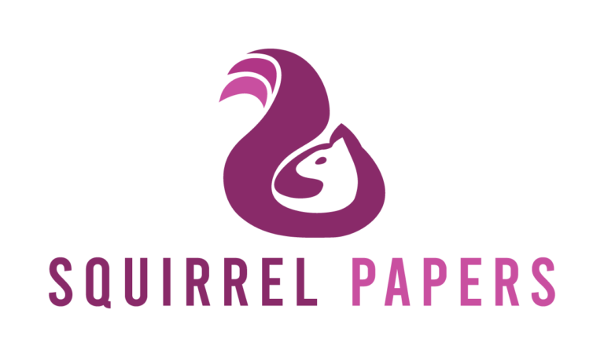

Die Squirrel Papers, dein Open-Access-Journal für LOD, RSE und Kulturerbe!
ISSN 2750-560X · Wikidata: Q89658875
Die Squirrel Papers des Research Squirrel Engineers Network sind ein kostenfreies Open-Access-Journal mit Publikationen auf Zenodo und dem Open Science Framework (OSF). Sie sammeln Forschungsarbeiten, Working Papers, Blogbeiträge, Poster, Folien, Forschungsdaten und Forschungssoftware aus den Bereichen Linked Open Data (LOD), Research Software Engineering (RSE), Kulturerbe und Geowissenschaften.
Die Squirrel Papers sind ein offiziell vom Nationalen ISSN-Zentrum für Deutschland anerkanntes Journal mit der ISSN 2750-560X.
Alle Bände
Neuester Band: Band 8
Heft 1
- §1
- §2
- §3
- §4
Heft 2 · Sonderheft Daten und Software
- §1
- §2
- §3
- §4
- §5
Heft 3 · Sonderheft Konferenzen und Vorträge
- §1
- §2
- §3
- §4
- §5